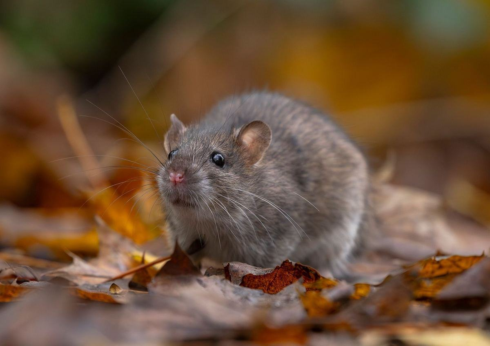

Le rat noir (Rattus rattus), aussi appelé rat des toits ou rat des greniers, est l'espèce de rongeur la mieux implantée sur le pourtour méditerranéen et en Corse, où des populations sauvages se maintiennent jusqu'en altitude. Excellent grimpeur, il s'installe surtout en hauteur : toitures, charpentes, combles.

Identification & risques
Identification
Corps de 15 à 24 cm, plus fin et plus agile que le rat brun, avec une queue toujours plus longue que le corps.
Pelage gris-brun à presque noir selon les individus, museau pointu, grandes oreilles.
Excellent grimpeur : circule aisément le long des gouttières, câbles, branches et façades.
Une espèce bien implantée en Corse
Le rat noir est l'espèce de rat la plus abondante et la mieux établie sur le pourtour méditerranéen et en Corse.
Des populations non commensales (indépendantes de l'homme) s'y maintiennent jusqu'à 1000 mètres d'altitude.
Il occupe aussi bien les habitations que les zones extérieures : jardins, palmiers, murets en pierre sèche.
Dégâts & risques
Installation privilégiée dans les combles, charpentes et faux-plafonds : dégâts sur l'isolation et le câblage électrique.
Contamination des denrées stockées, notamment fruits et graines dont il est particulièrement friand.
Contrairement au rat brun, il pénètre rarement par le sol : la vérification des accès en toiture est prioritaire.
Notre traitement professionnel
Diagnostic
Repérage des accès en hauteur
Inspection prioritaire de la toiture, des combles et des points de passage aériens (branches touchant la toiture, câbles, gouttières) utilisés par le rat noir pour accéder au bâtiment.
Action ciblée
Postes d'appâtage sécurisés en hauteur
Installation de postes d'appâtage sécurisés adaptés, positionnés en combles et points de passage identifiés — une approche différente de celle utilisée pour le rat brun, qui circule au sol.
Prévention
Calfeutrage des accès en toiture
Recommandations pour sceller les points d'accès en toiture et tailler les branches en contact avec le bâtiment, principale voie d'entrée du rat noir.
Foire aux questions — Rat noir
Quelle différence entre rat noir et rat brun (surmulot) ?
Le rat noir est plus fin, meilleur grimpeur, et s'installe en hauteur (toitures, combles, charpentes) avec une queue plus longue que le corps. Le rat brun est plus massif, mauvais grimpeur, et reste au sol ou en sous-sol (terriers, réseaux d'évacuation). Le traitement diffère selon l'espèce en cause.
Pourquoi le rat noir est-il si présent en Corse ?
Le climat méditerranéen lui est particulièrement favorable : le rat noir y maintient des populations stables et abondantes, y compris en dehors des habitations, jusqu'à 1000 mètres d'altitude selon les études régionales.
Comment savoir si j'ai des rats noirs plutôt que des rats bruns ?
Des bruits de déplacement en toiture ou en combles, plutôt qu'au sol ou en cave, orientent vers le rat noir. Un diagnostic sur place permet de confirmer l'espèce à partir des indices de présence (déjections, traces de passage, dégâts).
Comment empêcher son retour ?
La taille des branches en contact avec la toiture et le calfeutrage des accès en combles sont les mesures les plus efficaces, en complément du traitement par appâtage.
Interventions sur l'ensemble de la Haute-Corse et de la Corse-du-Sud